第 3 讲：如何构建游戏世界
从“一切都是游戏对象”出发，用组件化、Tick 循环、事件机制和场景管理搭起游戏世界的骨架
◆ 学完这一讲，你应该能
能说清游戏世界由哪些类型的对象组成（静态物体、环境、逻辑对象等）
能用组件化（Component）思想描述一个游戏对象，并解释它比继承好在哪里
能对比基于对象与基于组件的 Tick 循环，说出后者的性能优势
能解释事件机制如何解耦对象间的交互
能列举至少三种场景管理中的空间分割/查询结构，并说明其适用场景
核心结论速记
游戏世界里的一切都是游戏对象（Game Object）
游戏对象用“属性 + 行为”描述，但用继承分类会很快遇到“分类不完美”的问题
组件化（Component）用组合代替继承，把 Transform、Model、Physics、AI 等拆成可插拔的部件
游戏对象的状态在 Tick 循环中更新；按组件组织 Tick 比按对象组织更高效（可并行、缓存友好）
对象间通过事件（Event）机制交互，发送与处理解耦，避免硬编码耦合
游戏对象由场景（Scene）统一管理，借助网格、四叉树/八叉树、BVH、BSP、场景图等空间结构加速查询
商业引擎（UE/Unity）的 GameObject/Entity + Component 体系正是这一讲的工程实现
011. 游戏世界由什么组成：从无人机到空气墙
这一讲要回答一个很朴素的问题：游戏世界到底由什么构成？ 课件先给出一张分层图（Tool Layer、Function Layer、Resource Layer、Core Layer、Platform Layer），然后从最上层的“世界内容”切入。
把镜头拉近，一个典型的战场场景里有：
- 静态游戏对象（Static Game Objects）：无人机、防空导弹、士兵、火炮、坦克；还有棚屋、木屋、石头、瞭望塔、箱子。它们有形状、位置，但不一定每帧都在动。
- 环境（Environments）：天空（Sky）、植被（Vegetation）、地形（Terrain）。它们往往体量巨大、需要专门的数据组织方式（比如地形高度图、植被实例化）。
- 其他游戏对象（Other Game Objects）：标尺、导航网格（Navigation mesh）、空气墙（Air wall）、触发区域（Trigger Area）。这些对象没有可见的网格，但参与游戏逻辑——导航网格决定 AI 怎么走，空气墙挡住玩家，触发区域在玩家进入时发事件。
于是课件给出了一句贯穿全讲的话：Everything is a Game Object（一切都是游戏对象）。
这句话的工程含义是：引擎需要一个统一的“对象”抽象，让可见的坦克和不可见的触发器用同一套机制被创建、更新、查询、销毁。否则每加一种新东西就要改一次引擎核心，项目一大就失控。
注意“统一抽象”不等于“所有对象一样重”。商业引擎里通常有轻量对象（UE 的 Actor、Unity 的 GameObject）和更轻量的纯数据/组件之分，但对外都表现为“场景里的一个对象”。
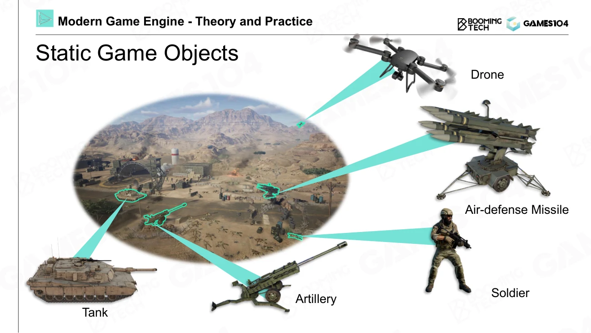
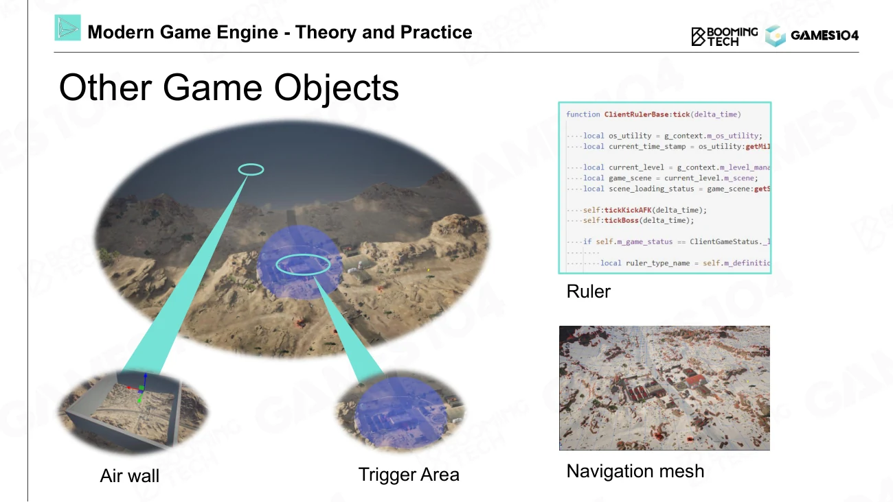
常见坑
把“游戏对象”等同于“可见模型” → 导航网格、触发器这类逻辑对象被漏掉 → 设计对象系统时要先列出所有需要被管理的实体类型，而不只是美术资产。
环境（地形/植被/天空）直接当普通对象逐個管理 → 数量爆炸、性能崩溃 → 地形用高度图、植被用实例化/散布系统，单独走专门管线。
UE / Unity 落地
UE：场景里的一切可放置实体都是 Actor，包括不可见的 Trigger Volume、NavMeshBoundsVolume；环境地形是 Landscape，植被是 Foliage。
Unity：对应 GameObject；导航用 NavMesh，触发区域用 Collider 勾选 Is Trigger。
022. 怎么描述一个游戏对象：属性、行为与继承的困境
课件用一个具体需求开场：“我想要一架无人机！”那现实中我们怎么描述一架无人机？
- 形状（属性）
- 位置（属性）
- 移动（行为）
- 电池容量（属性）
- ……
归纳起来就是：属性（Property）+ 行为（Behavior）。于是最直觉的写法是定义一个类：
class Drone {
Position position;
Health health;
Battery battery;
void Move();
void Scout();
}
现在需求升级：要一架武装无人机（Armed Drone）。它和普通无人机相比，属性多了弹药（ammo），行为多了开火（fire）。用继承（Inheritance）很自然：ArmedDrone extends Drone，UML 类图上一根箭头就搞定。
但课件紧接着泼了一盆冷水：游戏世界里没有完美的分类（No Perfect Classification）。设想你要给“飞行器（Aircraft）”分类：直升机、无人机、战斗机、飞艇……按动力分？按用途分？按是否载人分？每一种分法都会在某个新需求上崩掉。更糟的是多重继承会带来菱形继承、状态爆炸。
这不是设计者不够聪明，而是现实世界的分类本来就是多维的、模糊的，而继承是一棵单根的树，树装不下多维分类。
课件的解法是下一节的组件化（Component）：不再问“它是什么”，而是问“它由哪些部件组成”。
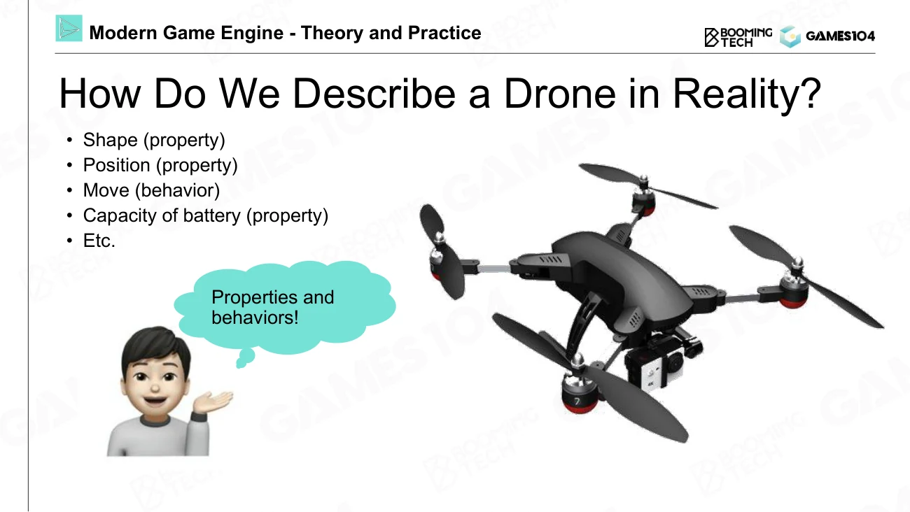
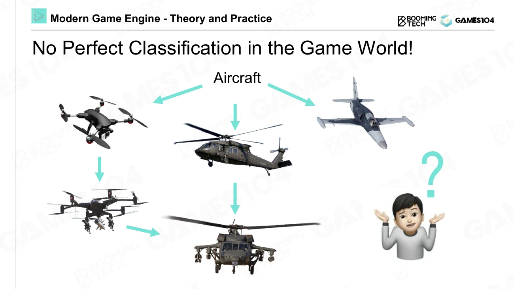
常见坑
一上来就用继承建模所有对象 → 需求一变就要改类层次，牵一发动全身 → 先识别“可复用的能力”，优先考虑组合。
把行为写成对象内部的大 switch/if-else → 新增类型要改旧代码，违反开闭原则 → 用组件或数据驱动的方式扩展。
UE / Unity 落地
UE：早期蓝图/ C++ 里也有继承（AActor → APawn → ACharacter），但引擎同时提供组件来横向扩展能力，避免继承树过深。
Unity：GameObject 本身几乎没有行为，行为都挂在 Component 上，这是“组合优于继承”的直接体现。
033. 组件化：用“拼装”代替“分类”
课件用两个现实类比讲组件化（Component）：
- 工程机械：挖掘机、装载机、压路机，底盘、动臂、铲斗、驾驶舱等部件可以互换组合。
- 枪械：HK416、M4、AR 系列，枪管、护木、弹匣、瞄具按接口组合。
对应到无人机，它由这些组件构成：Transform（变换）、Motor（动力）、Model（模型）、Animation（动画）、Physics（物理）、AI……每个组件只负责一件事。
代码上通常有一个组件基类：
class Component {
public:
virtual void Tick(float dt) = 0;
virtual ~Component() = default;
};
class Transform : public Component { /* 位置、旋转、缩放 */ };
class Physics : public Component { /* 刚体、碰撞 */ };
class Animation : public Component { /* 动画状态机 */ };
游戏对象本身只持有一组组件指针，按需增删。
再看无人机 vs 武装无人机：两者的 Transform、Model、Animation、Motor、Physics 完全相同，唯一区别是武装无人机多了一个 AI ≠ AI Combat 的组件（战斗 AI）。用组件化，你不需要复制整个类，只需要“多挂一个组件”。
课件还展示了商业引擎里的组件面板（Components in Commercial Engines），说明这不是教学玩具，而是 UE/Unity 的真实工作方式。
组件化的代价是：对象的行为分散在多个组件里，调试时要在组件之间跳转；组件间通信需要约定（下一节的事件机制就是为此服务的）。
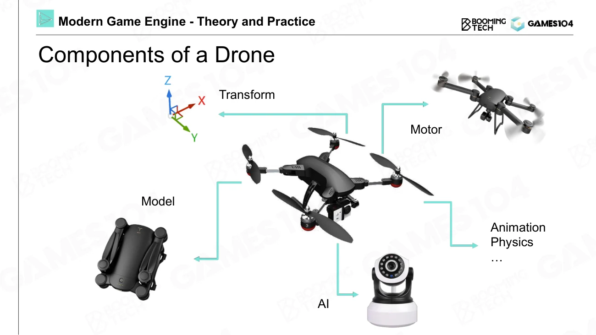
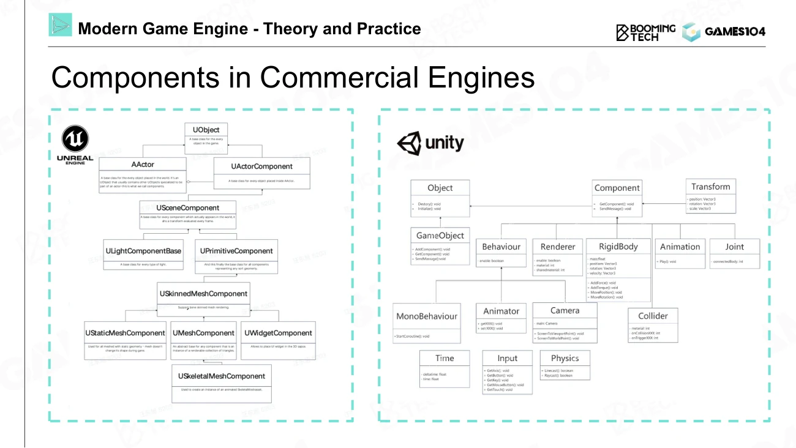
常见坑
组件之间直接互相持有指针并随意调用 → 耦合重新出现，组件失去可插拔性 → 用事件或明确的依赖注入来通信。
把所有逻辑塞进一个“万能组件” → 退化成继承式大类 → 按单一职责拆分，一个组件只做一件事。
UE / Unity 落地
UE：UActorComponent / USceneComponent，Actor 通过 AddComponent 挂载；Transform 由 RootComponent 统一管理。
Unity：GameObject.AddComponent<T>()，Transform 是每个 GameObject 必有的组件。
组件基类与对象持有组件的伪代码（cpp）
class GameObject {
std::vector<Component*> components;
public:
template<typename T> T* AddComponent();
template<typename T> T* GetComponent();
void Tick(float dt) {
for (auto* c : components) c->Tick(dt);
}
};044. 让世界动起来：Tick 循环的两种组织方式
对象描述好了，接下来要每帧更新它们的状态，这就是 Tick（也叫 Update）。课件对比了两种组织方式。
基于对象的 Tick（Object-based Tick）：每个游戏对象内部依次调用自己的各个组件。
GO1: Motor → Controller → Animation
GO2: Motor → Controller → Animation
...
优点很直观：简单、直观、容易调试——一个对象的逻辑都在一处，断点一打就能跟。
基于组件的 Tick（Component-based Tick）：把所有对象的同类组件收集到一起，按组件类型批量更新。
Motor 阶段：GO1, GO2, GO3, GO4 ...
Controller 阶段：GO1, GO2, GO3, GO4 ...
Animation 阶段：...
课件给出的优势是：可并行化处理（Parallelized processing） 和 减少缓存未命中（Reduced cache miss）。
为什么？因为同一类组件的数据在内存里连续存放，CPU 顺序访问时缓存命中率高；而按对象遍历时，每跳到一个对象就要换一块内存，缓存频繁失效。并行化也更容易：同一阶段内不同对象互不依赖，可以分到多个线程。
代价是：跨组件的依赖顺序需要显式安排（比如物理必须在动画之前），调试时一个对象的逻辑分散在多个阶段。
这就是现代引擎 ECS（Entity-Component-System）思想的雏形：数据按组件类型连续存储，系统按阶段批量处理。
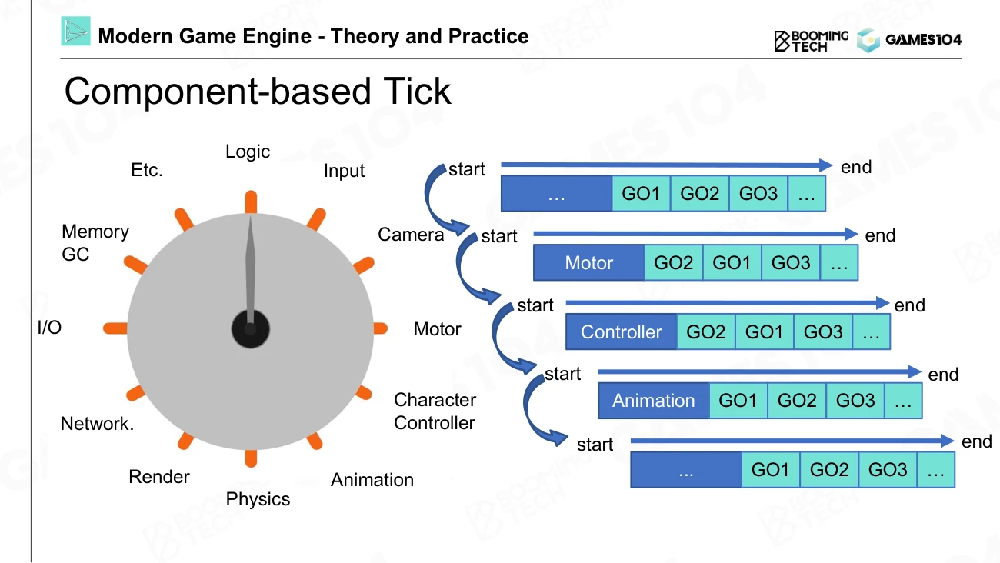
常见坑
组件 Tick 顺序没定义 → 物理还没算完动画就采样，出现抖动/穿模 → 在引擎里显式规定阶段顺序（如物理→动画→渲染）。
以为组件化 Tick 一定更快 → 对象很少时按对象遍历反而更简单 → 小规模用直观写法，大规模再上按组件批处理。
UE / Unity 落地
UE：Tick 由 Actor 的 PrimaryActorTick 驱动，组件也可独立 Tick；底层有 Tick 函数注册与分组机制。
Unity：Update / FixedUpdate / LateUpdate 就是不同阶段的 Tick；DOTS/ECS 则是彻底的按组件批处理。
055. 对象之间怎么交互：事件机制
世界活了，但对象不能各玩各的。课件抛出一个具体问题：“怎么让一颗弹药在游戏里爆炸？”
最直接的写法是硬编码（Hardcode）：弹药爆炸时，依次调用士兵、直升机、石头、坦克的受伤逻辑。
void OnExplode() {
soldier.TakeDamage(...);
helicopter.TakeDamage(...);
stone.TakeDamage(...);
tank.TakeDamage(...);
}
问题很明显：每新增一种可被炸的对象，就要改爆炸代码；爆炸逻辑和具体对象死死绑在一起。
课件的解法是事件（Event）机制：消息的发送与处理解耦。
- 爆炸发生时，只发送一个“爆炸事件”（携带位置、半径、伤害等参数）。
- 感兴趣的对象订阅并处理这个事件：士兵收到后扣血，石头收到后碎裂，直升机收到后坠落。
- 发送方不需要知道谁在听，接收方也不需要知道谁发的。
这就是“解耦事件发送与处理（Decoupling event sending and handling）”。
工程上要注意：事件是异步/延迟的，同一帧内的事件顺序需要定义；事件过多会带来性能开销和调试困难（“谁触发了这个事件？”），所以商业引擎通常提供事件调试工具。
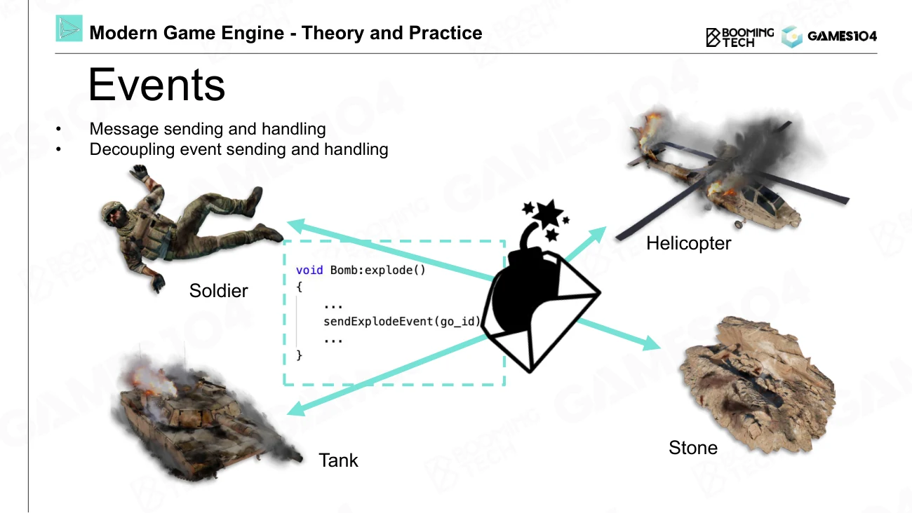
常见坑
事件里传裸指针/引用 → 接收方处理时对象已销毁，野指针崩溃 → 传 ID 或弱引用，处理前校验有效性。
事件链过长且无日志 → 出问题不知道谁触发 → 给事件加来源标记和调试面板。
UE / Unity 落地
UE：Delegate（委托）与 Event Dispatcher，蓝图里用 Event Dispatcher 做对象间广播。
Unity：C# event / UnityEvent，或 SendMessage（不推荐，性能差且隐式）。
066. 怎么管理这么多对象：场景与空间查询
对象多了就要管理。课件给出的容器是场景（Scene）：游戏对象都在场景里被统一管理。
管理要解决的核心问题是查询：
- 按唯一 ID 查（精确查找某个对象）。
- 按位置查（“我周围有哪些对象？”——这是最常用的）。
如果场景里有成千上万个对象，逐个遍历就是大海捞针（A needle in a haystack）。课件用“不划分 vs 按网格划分”的对比说明：把空间切成格子，查询时只检查附近格子，复杂度大幅下降。
进一步，课件介绍了两类改进：
- 按对象簇分割（Segmented space by object clusters）：不是均匀切格子，而是按对象聚集情况划分，稀疏区域格子大、密集区域格子小。
- 层次化分割（Hierarchical segmentation）：像“中国→浙江→杭州”一样逐层缩小范围，典型结构是四叉树（Quadtree，2D）/ 八叉树（Octree，3D）。查询时从根节点往下走，只进入与查询范围相交的节点。
课件最后列出常见的空间数据结构（Spatial Data Structures）：
- BVH（Bounding Volume Hierarchies，包围体层次）：按对象包围盒自底向上合并成树，常用于射线检测、碰撞粗筛。
- BSP（Binary Space Partitioning，二叉空间分割）：用平面递归分割空间，早期用于室内可见性判断。
- Octree（八叉树）：三维均匀层次分割。
- Scene Graph（场景图）：按父子关系组织对象，变换沿层级累积，渲染和动画常用。
选型要看场景特征：动态对象多用 BVH/八叉树，静态室内可用 BSP，层级变换用场景图。
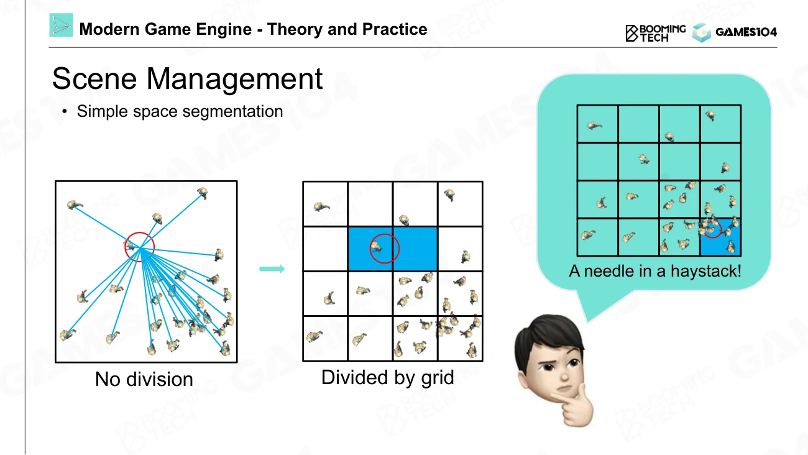
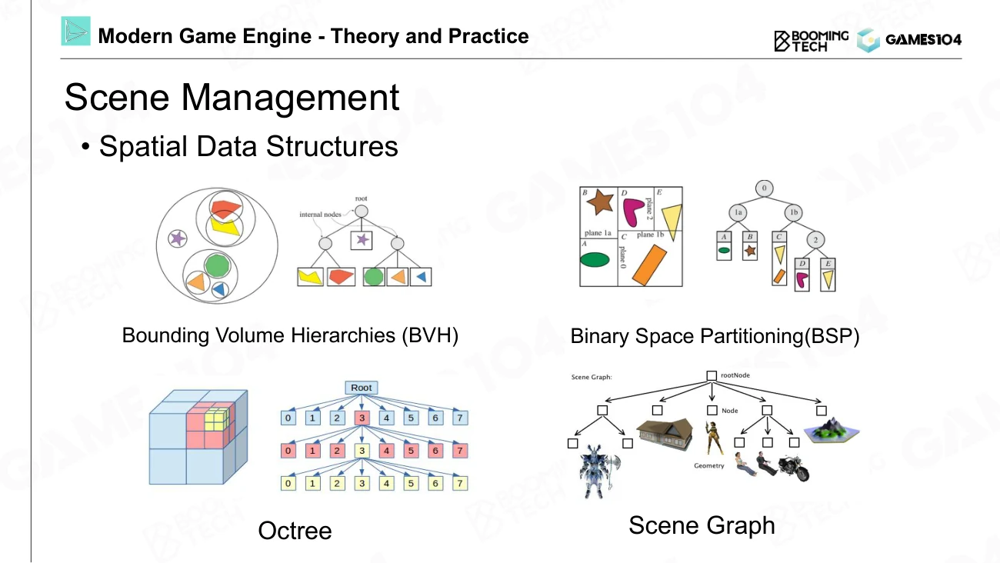
常见坑
所有查询都遍历全场景 → 对象一多帧率暴跌 → 引入空间结构，按位置查询走索引。
对象移动后不更新空间索引 → 查询结果过期，出现“打不中” → 移动时同步更新所在节点（或延迟重建）。
场景图父子变换累积错误 → 子物体位置漂移 → 确保每帧从根节点重新计算世界变换，或使用脏标记。
UE / Unity 落地
UE：World 管理所有 Actor，提供空间查询接口（OverlapMultiByChannel 等），底层用空间索引加速。
Unity：Scene 管理 GameObject，Physics.OverlapSphere 等查询依赖物理场景的空间划分；场景图即 Transform 父子层级。
077. 本讲收束：五句话记住游戏世界的骨架
课件最后用五条 Takeaway 收束全讲，这也是整讲的骨架：
- 一切都是对象（Everything is an object）——可见的、不可见的，统一抽象。
- 游戏对象用组件化方式描述（Game object could be described in the component-based way）——组合优于继承。
- 游戏对象的状态在 Tick 循环中更新（States of game objects are updated in tick loops）——按组件组织更高效。
- 游戏对象通过事件机制交互（Game objects interact with each other via event mechanism）——发送与处理解耦。
- 游戏对象在场景中被高效策略管理（Game objects are managed in a scene with efficient strategies）——空间结构加速查询。
课件还补充了两张工程细节图：组件依赖（Component Dependencies） 与 立即事件发送与否（Immediate Event Sending or not），提醒我们组件之间、事件之间都有顺序与依赖问题，不是“挂上就完事”。
最后课件展示了“第一版动画系统（First version of animation system）”，作为下一讲的引子——对象和组件搭好了，接下来要讲它们怎么动得好看。
把这一讲放回引擎分层图：我们讲的是 Function Layer（功能层） 的世界组织方式，它向下依赖 Resource/Core/Platform 层，向上支撑 Tool 层。理解了这一层，你再看 UE 的 Actor-Component 体系或 Unity 的 GameObject-Component 体系，就不会觉得是一堆零散 API，而是一套有清晰动机的设计。
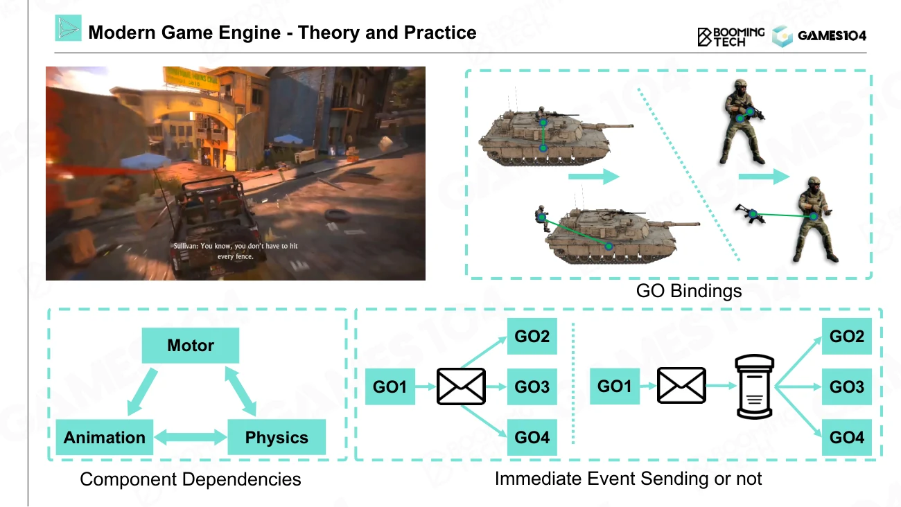
常见坑
把五条 Takeaway 当成五个孤立知识点 → 实际它们是一条链：对象→组件→Tick→事件→场景管理 → 复习时按这条链串起来记。
忽略组件依赖顺序 → 运行时出现“有时对有时错”的随机 bug → 明确依赖图，固定更新顺序。
UE / Unity 落地
UE：Actor-Component 体系 + World + Delegate，正好对应本讲五条。
Unity：GameObject-Component + Scene + C# event/UnityEvent，同样一一对应。
引擎对照表
| 概念 / 效果 | Unreal Engine | Unity |
|---|---|---|
游戏对象 | Actor（可放置实体，含不可见 Trigger） | GameObject |
组件 | UActorComponent / USceneComponent，AddComponent 挂载 | Component，AddComponent<T>() 挂载 |
变换 | RootComponent 的 Transform | 每个 GameObject 必有的 Transform |
每帧更新 | Actor/Component 的 Tick，可设 TickGroup | Update / FixedUpdate / LateUpdate |
事件 | Delegate、Event Dispatcher | C# event、UnityEvent |
场景与空间查询 | World + OverlapMultiByChannel 等空间查询 | Scene + Physics.OverlapSphere 等 |
术语双语表
| English | 中文 | 说明 |
|---|---|---|
| Game Object | 游戏对象 | 游戏世界中的基本实体，可见或不可见，统一抽象 |
| Component | 组件 | 可插拔的功能部件，用组合代替继承描述对象 |
| Tick | 帧更新 | 每帧调用以更新对象状态，可按对象或按组件组织 |
| Event | 事件 | 对象间消息机制，发送与处理解耦 |
| Scene | 场景 | 统一管理游戏对象的容器 |
| Quadtree / Octree | 四叉树 / 八叉树 | 层次化空间分割结构，加速按位置查询 |
| BVH | 包围体层次 | 按包围盒合并成树，用于射线检测与碰撞粗筛 |
| BSP | 二叉空间分割 | 用平面递归分割空间，早期用于室内可见性 |
| Scene Graph | 场景图 | 按父子关系组织对象，变换沿层级累积 |
| ECS | 实体-组件-系统 | 按组件类型连续存储、系统批量处理的架构，本讲组件化 Tick 的延伸 |
课后练习
01 为什么课件说“游戏世界没有完美的分类”？请举一个继承会崩掉的例子。
查看答案
提示：
从多维分类角度想。
因为现实对象可按多个维度分类（动力、用途、是否载人），而继承是单根树，装不下多维。例如“飞行器”按动力分有螺旋桨/喷气，按用途分有侦察/战斗，交叉组合会产生大量子类，新增一个维度就要改整棵树。
02 对比基于对象与基于组件的 Tick，各写一条优点和一条代价。
查看答案
提示：
从调试与性能角度。
基于对象：优点是简单直观、易调试（一个对象逻辑集中）；代价是缓存不友好、难并行。基于组件：优点是同类数据连续、缓存命中高、可并行；代价是跨组件依赖顺序需显式管理、调试时逻辑分散。
03 爆炸事件机制相比硬编码好在哪里？工程上要注意什么？
查看答案
提示：
解耦与生命周期。
好在发送方只发事件、不关心谁处理，新增可被炸对象无需改爆炸代码。注意：事件里不要传裸指针（对象可能已销毁），要传 ID 或弱引用并校验；事件顺序要定义；要有调试手段追踪来源。
04 场景里有 10 万个对象，要频繁查询“玩家周围 50 米内有哪些对象”，你会选什么空间结构？为什么？
查看答案
提示：
动态对象、范围查询。
选八叉树或 BVH（动态对象多时 BVH 更常用）。它们能把查询范围逐层缩小，只检查与范围相交的节点，避免遍历全部对象；网格划分也可但稀疏区域浪费，层次结构更均衡。
05 在 UE 或 Unity 里，找一个你熟悉的 Actor/GameObject，列出它挂载的组件，并说明如果不用组件化、改用继承要写多少个类。
查看答案
提示：
打开编辑器看组件面板。
例如 UE 的 Character：含 Transform、SkeletalMesh、CharacterMovement、CapsuleCollision、AnimInstance 等。若用继承，需要为“会走的”“有模型的”“有碰撞的”等每种组合建类，组合数爆炸；组件化只需按需挂载。答案因对象而异，关键是能说出组件清单并解释组合优势。